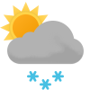

Weather
Germersheim -6.7-1.0
-6.7-1.0

-1.0-1.8 Sun

-0.6-3.5 Mon

2.0-5.0 Tue

1.8-3.9 Wed

-0.2-4.5 Thu

0.9-4.1 Fri

1.7-4.6 Sat

2.1-4.9 Sun

1.0-4.2 Mon
Erlabrunn -6.0--3.1
-6.0--3.1

-3.4--2.2 Sun

-3.1--1.7 Mon

-1.8-0.2 Tue

-2.4-0.0 Wed

-1.7-0.0 Thu

-6.6--2.6 Fri

-4.8-0.5 Sat

-1.9--1.0 Sun

-2.3-0.3 Mon
Schmilka -2.5-0.1
-2.5-0.1

-0.3-1.5 Sun

-0.2-1.2 Mon

-0.2-2.3 Tue

-1.6-0.9 Wed

1.3-2.6 Thu

-2.0-0.2 Fri

-8.2-3.5 Sat

1.0-2.0 Sun

0.4-4.1 Mon